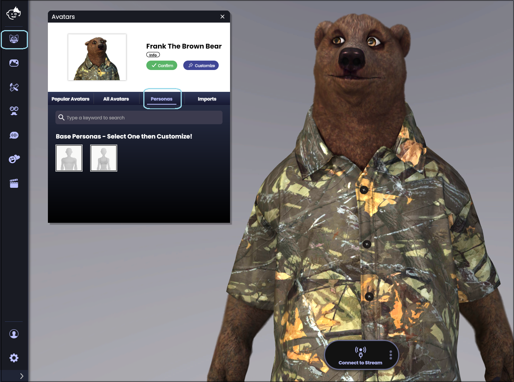
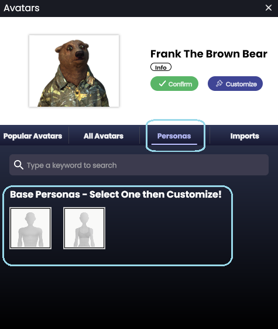
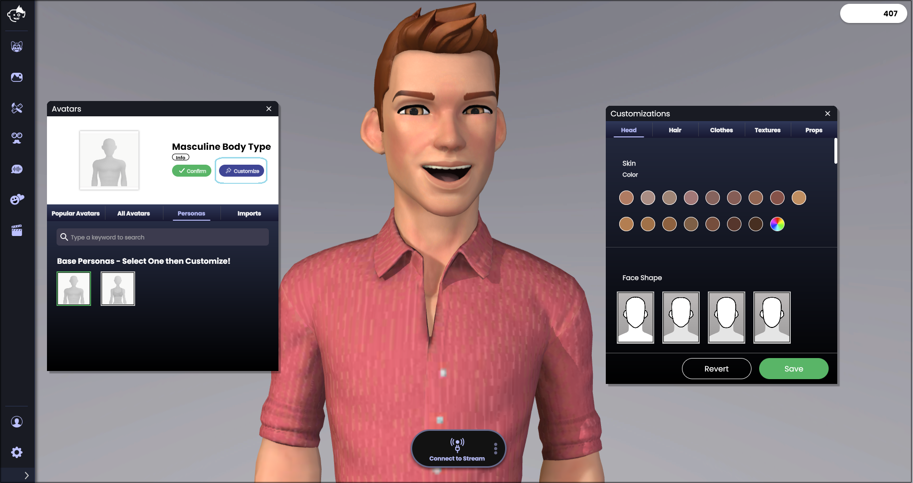
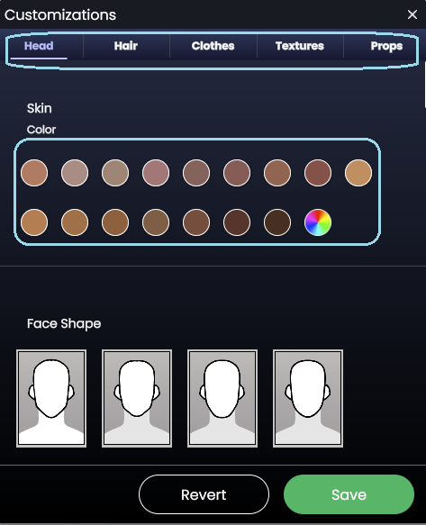
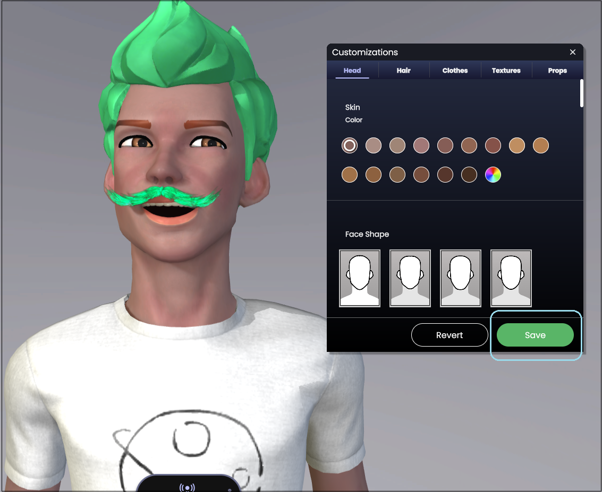
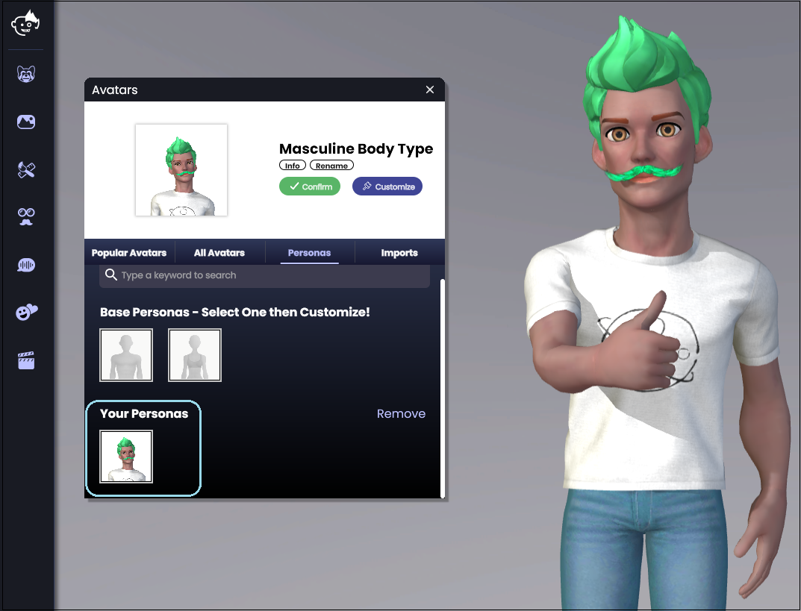

Animaze Desktop: How can I use the Animaze personas?
As of February 2021, the Personas avatars will also be available in the Animaze Desktop app. The in app character creator feature will help easily create your very own human avatar and customize it by selecting from a wide variety of facial features like hairstyles, eye shape, skin tone, and clothing!
This feature can be used by accessing the avatar tab and then going to the personas tab.

From here, you can establish the base persona that you will want to customize later on

Once this is selected, you can further customize it by hitting the customize button

Go through all the customizations you wanted to add

Hit Save when you're satisfied with the avatar you created

And your saved persona will appear under the Your Persona category

You can also save more than one persona and delete each of them by hitting the remove button